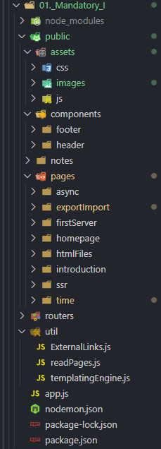
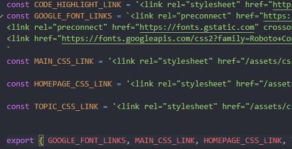
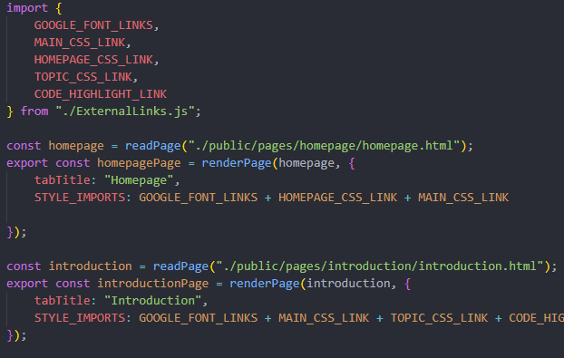

Export/Import
ES modules or ECMAScript modules, are the standard way to modularize code in JavaScript.
ES modules allow us to export and import things from one module to another.
It increases the reusability of code.
It is imperative to note, that it requires the use of type="module" in the script tag in the HTML file
for applications running in the browser.
For Node.js, it's your package.json file that needs tweaking.
Below is an example of a package.json file with the "type": "module".
{
"type": "module",
"dependencies": {
"express": "^4.19.1",
"nodemon": "^3.1.0"
}
}
CommonJS and ECMAScript modules (ES6) are two different module systems in Node.js.
CommonJS is the native module system for Node.js, and is what we worked with in the beginning of this semester.
Its syntax for importing modules is:
const express = require('express');
To use ES6 modules, you need to set "type": "module" in your package.json file.
ES6 modules use the following syntax, among others, for importing modules:
import express from "express";
import { readPage, renderPage } from "./templatingEngine.js";
import * as name from "module-name";
Serving static files in Node.js can be done using the express.static middleware.
The express.static middleware is a built-in function in express.
The result of the code block below, is that express will serve static files from the directory given.
(usually a folder named "public")
this also means that only files in the public folder can be accessed by the client.
app.use(express.static("public"));
When it comes to fetching data, there are pros and cons to both backend and frontend approaches.
In regards of structuring our HTML, this is the folder structure we have ended up with.

With footer and header divided into separate files, and the main content in the pages folder,
we have a clean and organized structure.
using a more modular approach, we can easily add new pages and reuse components.
I went a step further than what we've been taught,
and decided to store all my external links in a separate file.
This way, I can easily update all my links in one place.

